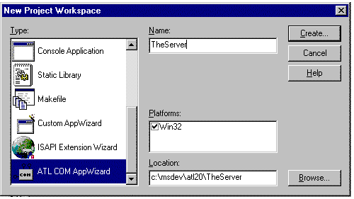
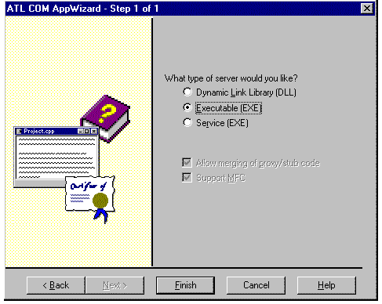
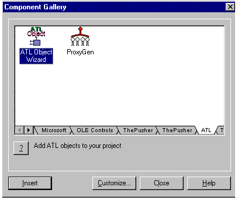
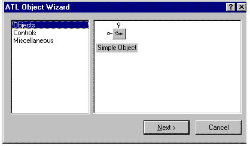
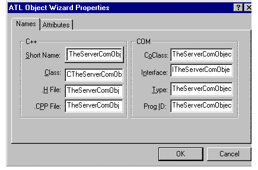
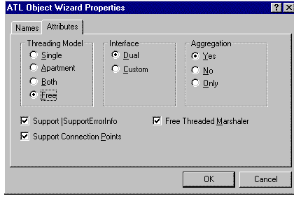

|
| ||
|
| ||
Steve Robinson and Alex Krasilshchikov
Panther Software
May 1997
This article is divided into four parts:
Overview
Part 2: Building the Pusher Client Application
Part 3: Adding a Connection Point to the Server
Part 4: Developing the ActiveX Control
The Component Object Model, or COM, is an extremely elegant and efficient methodology for inter-process communications. COM allows developers to build stand-alone components (servers). Users, or clients, of COM servers can use pre-built functionality in server objects without intimate knowledge of the server object during development; instead of requiring the developer to create a link to a component's functionality at design time or provide a path to the component in the source code, COM is able to ask the registry for the object's location. This means that as long as the registry knows where to find the server object, your client application is in business. Asking the registry to point the way to the server is as easy as asking directions to a city street. The object of this article (not to be considered overly technical in any shape or form) is to teach you how easy it is to use COM, with complete, working, and reusable samples that will get you through COM basics. In fact, after reading this article and working through the samples with us, Kraig Brockschmidt's Inside OLE 2.0 will be easier to understand as a more advanced and in-depth reference.
Distributed COM (DCOM) is the big brother of COM. The definition of "distributed" is that it is able to run clients and servers in different processes across an intranet or internet. DCOM works just like COM: a client asks the registry where the server is located and, instead of pointing it to someplace on the local machine, it points to an IP address (for example, 123.234.199.27). The primary difference between using COM and DCOM is that COM processes run on the same machine in different address spaces, but DCOM processes are spread across a network. When you work with processes in different address spaces, whether on the same machine or across a network, you need to implement marshalling. The actual internal implementation of the marshalling is the only difference between COM and DCOM from the COM-enabled application developer's standpoint.
Simply put, marshalling is the process of packaging up the data so that when it is sent from one process to another, the receiving process can decipher the data. Traditionally, this has been a very frightening topic -- yes, even more frightening than COM itself -- but your buddies at Microsoft have been burning the midnight oil in order to come up with a new technology called Active Template Library (ATL), which practically makes marshalling child's play. In fact, with Active Template Library (ATL), Visual C++ can not only generate all the marshalling code for you, but it can also create C++ COM classes. If you know Visual C++ and Microsoft Foundation Class Library for C++ (MFC), you can easily add additional functionality to AppWizard's automatically-generated C++ COM classes. This article is going to demonstrate how to:
And because we hate those samples that only give you half of the information and leave the remainder as an exercise, we are going to build actual clients that use our DCOM server.
We have told you that we are going to make you into a COM expert and turn DCOM and marshalling into child's play. But wait there is even more. We are going to show you one of the most important and powerful COM/DCOM technologies: connection points. Simply described, connection points allow you to take an interface pointer (a concept that will be explained later in this article) from your client application and put it into your server application. The result is that the server application calls functions in the client application, which means that your server application can call functions in your client application to process any data it receives! In case you have not realized, this means real-time data delivery from server to client! No more polling or timers in your client to trigger a query!
We are going to walk you through all of this in your MFC application, working with the new ATL code that plugs into Visual C++. By the time that you have finished the exercises described in this article, you will create an ActiveX control, running in Internet Explorer (IE), that will change colors every time data is changed in a remote server. Don't have a separate server machine? No worries, mate. We are going to develop separate processes -- all on one machine -- with identical code and results!
Through the course of this article, we are going to build three applications:
All of these samples are included with this article. You can work with the pre-built samples, noting the steps as we go along, or else develop the samples from scratch, as we will do in the article.
In order to build the samples, you will need Visual C++ 4.2 or later. While you do not need 10 years of Windows and C experience, you do need to have some experience with Visual C++ and MFC. With Visual C++ we are going to generate two applications and one ActiveX control. Accordingly, you need an application that can act as a container for our ActiveX control, TheControl. While you could generate an application quickly and easily in Visual Basic or Visual C++, or even use the Test Container application that comes with Visual C++, we are going to use Internet Explorer as our container. Hence, make sure you have Internet Explorer 3.0 or later. You can download Internet Explorer  from Microsoft or, if you have a Microsoft Developer Network (MSDN) subscription, you will find it on CD 9 of the January 1997 MSDN Library. Because we are going to insert the ActiveX control into a Web page, we are also going to use ActiveX Control Pad to simplify the task. You can download the ActiveX Control Pad from Microsoft at http://www.microsoft.com/workshop/misc/cpad/default.asp. The ActiveX Control Pad is also on CD 9 of the January 1997 MSDN Library.
from Microsoft or, if you have a Microsoft Developer Network (MSDN) subscription, you will find it on CD 9 of the January 1997 MSDN Library. Because we are going to insert the ActiveX control into a Web page, we are also going to use ActiveX Control Pad to simplify the task. You can download the ActiveX Control Pad from Microsoft at http://www.microsoft.com/workshop/misc/cpad/default.asp. The ActiveX Control Pad is also on CD 9 of the January 1997 MSDN Library.
While you can utilize either Windows 95 or Windows NT as your development platform, if you are going to do any serious DCOM work, we highly recommend developing on Windows NT 4.0 or later Workstation or Server.
In addition to the Internet tools, you will also need to download ATL 2.0 or later, and, if you are using Visual C++ 4.2, the V42b patch. The samples were put together with Visual C++ 4.2. Everything is pretty much the same with Visual C++ 5.0, so no matter which version you have, you should be fine for the sample applications. If you do not have ATL 2.0 on your computer (it is included with Visual C++ 5.0), you should download the following components from http://msdn.microsoft.com/visualc/prodinfo/  :
:
Installion of Internet Explorer and ActiveX Control Pad should be straightforward (Internet Explorer: download size 10.3 MB, final installation size 5.810.3 MB; Control Pad, 2.73 MB download size, 10 MB final installation size). The complete ATL installation takes about 3 MB on your hard drive, and is also straightforward. Each installer must be run separately.
During installation the ATL installer finds your MSDEV folder and asks you if you want ATL installed in that location. If you choose Yes (recommended), it creates a folder called ATL20 in the MSDEV folder. The ATL declaration and source files are placed in your \MSDEV\INCLUDE folder. The Help files are coded in HTML; one day soon you're going to see the Help engine replaced with the Internet Explorer Web browser engine, so you may as well get acquainted with this model if you are not yet familiar with it. If you downloaded the ATL Docs, an additional set of Microsoft Word documents are installed in the ATL20 folder.
Now that you have everything you need, let's get started.
TheServer will be the name of our DCOM server. Start Visual C++ and start a new MFC project. When you get to the New Project Workspace dialog, slow down and take look at the options. If you scroll through the Type list box, you will see a new entry: ATL COM AppWizard. This new type was added when you installed ATL. Name your project as indicated, noting the directories. When you have done this, click the Create… button.

Here is a short overview of the different options:

A glance at the Class View in the Project Workspace provides a view of your executable class and all the global variables that are included by importing the ATL COM files. This is a nifty reference when you want to look up functions such as OLE2W(), which converts an OLE String to a Wide Character String. Switching to File View and expanding the Dependencies folder shows the files ClassWizard generated. The first three files that we are going to take a look at are atlbase.h, atlcom.h, and atlimpl.cpp. These files were files included by AppWizard when the project was generated. They are located in your \MSDEV\INCLUDE folder. These files declare and implement the ATL code in your applications. If you are familiar with COM, you might want to take a look at these files. ATL is really a C++ wrapper around many COM functions that are commonly grouped together. By implementing these classes and using them in a Visual C++ project file, Microsoft's engineers have made it possible to trigger other things to occur when the project is built, such as the generation of files that declare interfaces, and of proxy and stub marshalling code.
Double-clicking the next file, TheServer.h, prompts a warning that the file cannot be found. What the heck is going on here? There are files in the project that have not been generated yet, but the project is aware of them. This is also true of TheServer_i.c. So who will generate them, and, moreover, how will these files be generated?
We have all heard the promise of code wizards that can regenerate code as items are modified. ClassWizard does this, as does the Microsoft Interface Definition Language (MIDL) compiler, which you are about to use. IDL is the new hot language. It was originally used to create Remote Procedure Call (RPC) interfaces. In the Windows world, starting with Windows NT 3.51, Microsoft extended the MIDL compiler to generate COM interfaces. This could be the nicest thing Microsoft has done to ease the pain of development since creating ClassWizard.
In the Project Workspace view, click the file called TheServer.idl. This file is an AppWizard-generated file that the MIDL compiler uses to generate code. Soon you will be modifying this file, adding an Interface and your own methods and watching the MIDL compiler generate source code, marshalling code and functions, a type library that can be utilized by other programs, and interface IDs for you as if by magic. Currently, the file contains the following code:
// TheServer.idl : IDL source for TheServer.dll
//
// This file will be processed by the MIDL tool to
// produce the type library (TheServer.tlb) and marshalling code.
import "oaidl.idl";
import "ocidl.idl";
[
uuid(5E603BF1-9823-11D0-A4F8-0000B4533EC9),
version(1.0),
helpstring("TheServer 1.0 Type Library")
]
library THESERVERLib
{
importlib("stdole32.tlb");
importlib("stdole2.tlb");
};
This code, when run through the MIDL compiler, generates TheServer.tlb. MIDL imports oaidl.idl and ocidl.idl that together comprise a significant number of the most commonly used predefined interfaces, such as IClassFactory2 and IOleControl. The importlib directive makes types that have already been compiled into another type library (such as stdole32.tlb - Microsoft's OLE type library) available to the type library we are creating, TheServer.lib, as well as their proxy and stubs for marshalling.
We are now ready to add our first COM object. On the menu, click Insert | Component and select the tab titled ATL. You should see the following dialog box:

Double-click on the ATL Object Wizard icon. It, in turn, brings up the following dialog box:

Make sure Objects is selected and click the Next button. The ATL Object Wizard Properties dialog box appears with two tabs. The first tab allows you to create a name for your COM object. In the Short Name edit control, carefully type TheServerComObject. The names for the C++ class and declaration files are automatically generated, as are the names for the COM object that we will talk about in a minute. Your names should look like the following:

Click the Attributes tab and set properties, as indicated in the following image.

We will now re-examine the TheServer.idl file, which has a new object defined in the following code:
[
object,
uuid(5E603BF3-9823-11D0-A4F8-0000B4533EC9),
dual,
helpstring("ITheServerComObject Interface"),
pointer_default(unique)
]
interface ITheServerComObject : IDispatch
{
};
Here is the definition of the parameters:
At the bottom of the .idl file there is new information for the type library called a coclass. The coclass statement provides a listing of the supported interfaces for an object. An object can have any number of interfaces and dispinterfaces listed in its body, specifying the full set of interfaces that the object implements, both incoming and outgoing. If you add more interfaces to the application, in addition to creating interface declarations like the one above for your interfaces, you will need to add a coclass for the COM object.
coclass TheServerComObject
{
[default] interface ITheServerComObject;
};
The next file we want to take a look at is the traditional stdafx.h. The first thing you will notice about this file is that it does not contain the standard MFC includes. It includes atlbase.h that contains the mother of our application, CComModule. Amongst many other actions it performs, CComModule initializes an object map to the application's hInstance. The object map contains a link back to our coclass. That is why stdafx.h declares CExeModule derived from CComModule.
Stdafx.cpp includes the file atlimpl.cpp. This C++ file implements most of the ATL functions you will be using. These functions combine C++ wrappers with MIDL-generated marshalled code that will be the framework for your DCOM applications. If you are familiar with COM or MFC's COM capabilities, then some of the code will look familiar.
Glancing at TheServer.cpp, you will see that it both implements CExeModule, which is declared in stdafx.h, and provides a modified version of WinMain. This modified version of WinMain begins with the familiar and crucial CoInitialize and finishes with its opposite, CoUnitialize. In between, it calls the Init member function of ComModule and registers the class objects with a call to RegisterClassObjects. Simply, RegisterClassObjects registers the COM objects with the application module. In fact, we are also going to change this line. The first parameter of this function is CLSCTX_LOCAL_SERVER. Interpreted, this states "register our class objects as local servers." Because we require our server to double as a remote server, we will change the value to CLSCTX_SERVER. The entire function should now be modified as follows:
//change this so we can be any type of server, local or remote! hRes = _Module.RegisterClassObjects(CLSCTX_SERVER, REGCLS_MULTIPLEUSE);
At this point it is a good idea to compile and create links. Select Rebuild All and make sure that everything compiles cleanly and that your server is registered. You will notice that when you rebuild everything, the MIDL compiler generates the marshalling code. When the linker completes, you should get the message "Performing Custom Build Step," and your server should be registered (AppWizard set the Custom Build Step entries for you, under the Build | Settings… Custom Build tab).
We can now take a look at TheServer_i.c. It contains:
We can also take a look at TheServer.h, which was also generated by the MIDL compiler. Currently it contains seven functions. They start on approximately line 67. The first three functions are standard with all COM objects because every COM object must implement them: QueryInterface, AddRef, and Release. The next four functions are IDispatch functions that you may recognize: GetTypeInfoCount, GetTypeInfo, GetIDsOfNames, and Invoke. These functions appear because we marked our interface as a Dual interface in AppWizard. Had we not made it a dual interface, it would contain only the three required functions -- QueryInterface, AddRef, and Release.
Let's take a quick look at TheServerComObject.cpp. For the time being, it implements one function, InterfaceSupportsErrorInfo. InterfaceSupportsErrorInfo allows us to indicate automation errors. Documentation on using this is in your ATL documentation. We are not going to use this method in our examples, so we won't dwell on it here.
We are now ready to take a look at TheServerComObject.h. This file declares our class CTheServerComObject.
CTheServerComObject is derived from five classes through multiple inheritance:
- EnumConnectionPoints allows the client to determine which outgoing interfaces the object supports.
- FindConnectionPoint allows the client to determine whether the object supports a specific outgoing interface.
The next item we will note in the file is our COM map. The COM map is the mechanism that exposes interfaces in an object to a client through QueryInterface. CComObjectRootEx's InternalQueryInterface method returns only pointers for interfaces in the COM map.
All ATL COM maps start with the BEGIN_COM_MAP macro. When you add an interface entry you add them to the map. Currently there are five interface entries: IDispatch, which we are tired of hearing about by now; ISupportErrorInfo, which supports automation error handling as noted above; IConnectionPointContainer, which we will discuss later; an aggregated interface; and ITheServerComObject, which is our interface. Yes, we finally get to talk about our proprietary interface.
ITheServerComObject is the interface we created with AppWizard. AppWizard put this interface into the IDL file and the IDL file generated TheServer.h when it was compiled with the MIDL compiler. Recall that the seven functions generated were for ITheServerComObject. Now we are going to add our own functions to this interface.
One of the secrets to understanding IDL is that it does nothing more that declare functions. If nothing else, remember that whenever you declare a function in IDL, you need to declare it in your COM object's C++ declaration file, and then implement it in the .cpp file. With this in mind, let's give it a shot.
Open the file TheServer.idl. Immediately after the line import "oaidl.idl" add the line HRESULT HelloWorld();. The interface should now look as follows:
interface ITheServerComObject : IDispatch
{
import "oaidl.idl";
HRESULT HelloWorld();
};
All COM methods return an HRESULT. An HRESULT is a 32-bit value. S_OK, which is zero, is for success. All other values identify some type of error. Winerr.h, located in your \MSDEV\INCLUDE directory, contains many of the most common errors. When you get an error from a COM function (and you will), until you have them all memorized (which you never will), search for them in this file. Although it is possible to return your own values here, it is generally considered proper to return status codes.
Now we have to declare the function in TheServerComObject.h file. Open this file and scroll down to the bottom. Your buddies at Microsoft left a section at that bottom for public members. Currently there are no functions in this section; here is where we are going to add HelloWorld. Declare the function as follows:
// ITheServerComObject public: STDMETHOD(HelloWorld)();
STDMETHOD is a macro that is used so that virtual keywords are automatically provided.
Open TheServerComObject.cpp file and add the function HelloWorld as noted below. Now a client (a consumer, in OLE terminology) can create our server and call this function:
STDMETHODIMP CTheServerComObject::HelloWorld()
{
return S_OK;
}
Build and ensure that everything compiles and that links are created properly. Do not continue until you have everything compiled, linked, and registered correctly.
Now that everything is working, let's add one more function to this COM object. Open the file TheServer.idl. Let's add a function to our interface that takes a long value and returns a former value. Add the function AcceptNewValue exactly as it appears below, so that it is declared directly under HelloWorld.
HRESULT HelloWorld();
HRESULT AcceptNewValue([in]long lNewValue,
[out, retval] long* lpFormerValue);
In TheServerComObject.h, add the function AcceptNewValue exactly as it appears below.
STDMETHOD(HelloWorld)(); STDMETHOD(AcceptNewValue)(long lNewValue, long FAR* lpFormerValue);
Now add an implementation for AcceptNewValue in TheServerComObject.cpp. It should look something like this:
STDMETHODIMP CTheServerComObject::AcceptNewValue
(
long lNewValue, //in
long FAR* lpFormerValue //out
)
{
return S_OK;
}
Once again, before we continue, compile and build everything.
Now that you have successfully created these functions, let's make a couple of changes to the files TheServerComObject.h and TheServerComObject.cpp.
private: long m_lCurrentValue;
CTheServerComObject();
And the implementation file should have the constructor as follows:
CTheServerComObject::CTheServerComObject()
{
m_pUnkMarshaler = NULL;
m_lCurrentValue = 0;
}
STDMETHODIMP CTheServerComObject::AcceptNewValue
(
long lNewValue,
long FAR* lpFormerValue
)
{
if(lNewValue > 0 && lNewValue <= 2)
{
*lpFormerValue = m_lCurrentValue;
m_lCurrentValue = lNewValue;
return S_OK;
}
//return S_FALSE for value not accepted!
return S_FALSE;
}
Build everything and create links so we can build our first client application. If you run the program from the debugger, you will notice there is no interface; that is because it is a true server application that runs invisibly in the background at all times.
Did you find this material useful? Gripes? Compliments? Suggestions for other articles? Write us!
© 1999 Microsoft Corporation. All rights reserved. Terms of use.